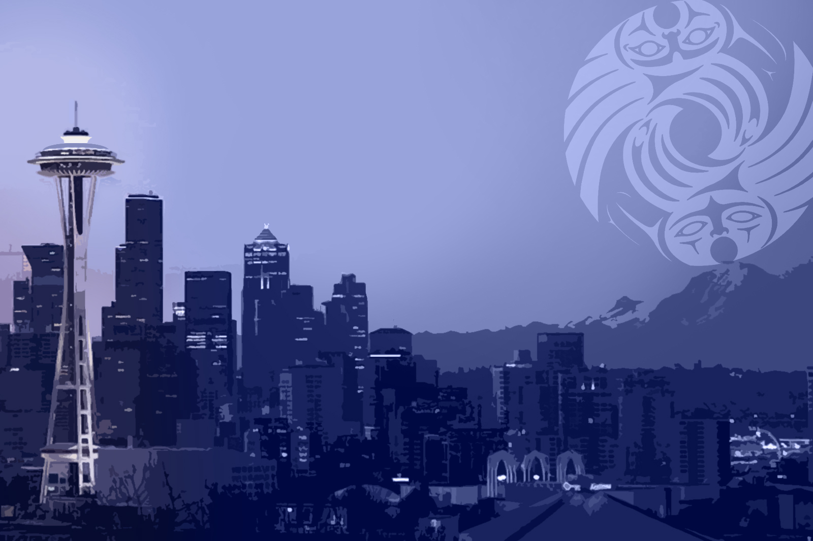

A rec league runs on people.
So this page opens with the real ones. These are some of the DiscNW staff and board. They are the reason more than 10,000 players get on the field every year. A homepage could open with action photos. This one opens with faces.
Start with the faces.
Every one of these is a real person from DiscNW. Same size, same frame, so the group reads as one. First names, because that is how it works on the field.


That is twelve of them. There are more staff, plus the coaches and the volunteers who make the rest of it happen. Same idea, more faces.

Most of them played here first. Some of them started as kids.

The people run the programs.
Here is some of what they put on. All of it is real, and most of it happens every year.
- Summer Youth Ultimate CampsFor ages 7 to 18. No experience needed.
- Summer Mixed Hat LeagueSign up on your own. You get placed on a team.
- Summer Wonder LeagueAdult ultimate on the long June evenings.
- Fall middle and high school leaguesAcross the Seattle area, every autumn.
- Spring ReignThe world's largest mixed youth ultimate tournament.
- Sea PlasticThe beach tournament. Cleats come off.
- PotlatchThe summer tournament DiscNW grew out of, back in 1995.
- DiscNW Coaching CollectiveTraining for the people who coach.
People stick around because someone learned their name in the first week.

No referees. The players make the calls.
Every DiscNW game is self-officiated, at every age and in every division. When a call is close, the players on the field settle it themselves. That has been the system since 1995. It works because of the people, not in spite of them.
No one is turned away for lack of money.
Fees start at $33. There is a sliding scale and financial aid. If cost is the problem, it gets solved. That is what "an Ultimate community without barriers" means in practice.
A league with no referees needs people who show up. These are some of them.

Want in?
You do not have to have played before. Every face on this page started somewhere. There are four plain ways in.
The people who make it run.
DiscNW · Seattle · since 1995Come be one of the people.
You can play, coach, volunteer, or give. Fees start at $33, with a sliding scale and financial aid. No one is turned away for lack of money.
Start at discnw.org · or call (206) 781-5840Erin · Lili · Sarah · Taylor · Joe · Matt · Chris · Alan · Khalif · Sheila · Qxhna · Mel — and you.
Nº 20 — The People
The idea
A rec league runs on people, so the site opens with the real ones. It leads with the actual DiscNW staff and board instead of action photos. The programs, the fees, and the no-referee rule are all told as things these people run.
Signature
The face wall. Real headshots on varied backgrounds, all held in the same square frame at the same size, so a mixed set of photos reads as one intentional group. A first name and one plain role under each. A few faces come forward as you scroll.
Palette — warm, built to sit behind photos
#F4ECDF
Warm Sand #EBE0CE
Card Oat #E6DBC6
Espresso #241E17
Clay #A84324
Type
Fraunces for the headlines and names, a warm humanist serif with a human feel. Hanken Grotesk for body and labels, a friendly, plain humanist sans.
Motion
Faces fade up in a tight, even wave. A few come forward with a small rise. No filter, tint, or overlay ever touches a photo. Everything settles within about two seconds. Turn motion off and the page is already there.
Choose this if
You want the mission obvious on the first screen: people first, programs second. And you want a homepage built from assets you already have, which are real faces, real program names, and the real fee model.
Think twice if
You need program-first wayfinding above the fold, or you cannot keep the headshots current. The wall is only as good as the photos in it, and it works best when every face is recent and framed the same.
The assets shown
Twelve real DiscNW headshots, the 2024 board and staff group photo, the program names, and the sliding-scale fee. The formline mark closes the page with clearspace on a solid ground.